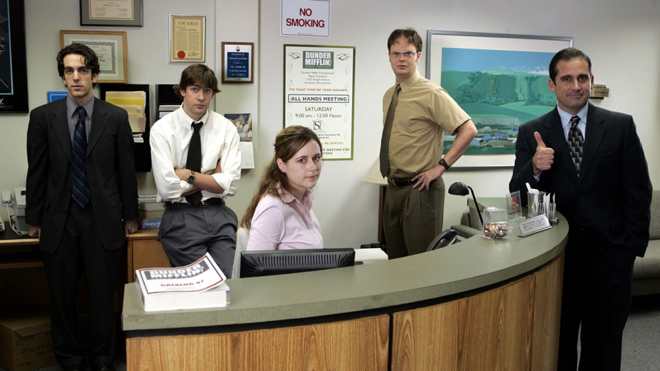

DUNDER
MIFFLIN
PAPER COMPANY
|
I am Beyoncé always.
|
|
CTA Text
|

|
|
They always say that it’s a mistake to hire your friends. And
they are right. So, I hired my best friends.
|
|
Would I rather be feared or loved?
Easy. Both. I want people to be afraid of how much they love
me.
|
’R’ is among the most menacing of sounds.
That’s why they call it ‘murder’ and not ‘mukduk.’
|
Guess what, I have flaws. What are they?
Oh, I don’t know. I sing in the shower. Sometimes I spend too
much time volunteering. Occasionally I’ll hit somebody with my
car. So sue me.
|
|
CTA Text
|